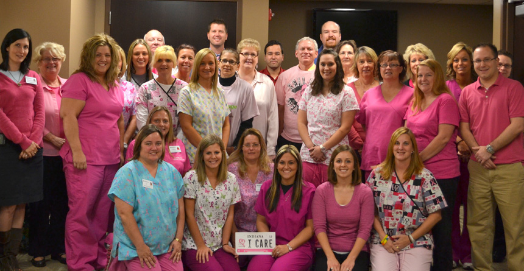

Funding for Screening Mammograms Available at Health Center
October 2, 2012
Have you or someone you know, been diagnosed with breast cancer? Are you aware of the importance of early detection with breast cancer, which can increase a person’s survival rate?
Vermillion-Parke Community Health Center (VPCHC) has received funding to provide screening mammograms for women who are uninsured, underinsured or have a high deductible. If you are over 40 years old and are in need of a screening mammogram, call our office to schedule an appointment with one of our medical providers to get a Clinical Breast Exam (CBE) and to obtain a voucher for a free mammogram at Union Hospital Clinton.
Patients will be financially responsible for the medical provider visit. VPCHC offers an income based sliding fee scale for the underinsured and uninsured. Funding for the mammograms is made possible by a grant from the Indiana Breast Cancer Awareness Trust, Inc. through sales of the Indiana Breast Cancer license plate.
October is Breast Cancer Awareness month, and according to Susan G. Komen for the Cure, in 2012, an estimated 226,870 cases of invasive breast cancer will be diagnosed among women.
VPCHC would like to remind everyone how important early detection is with breast cancer. When breast cancer is detected early, the five-year survival rate is 98%, according to the National Breast Cancer Association. Through monthly breast exams and yearly mammogram screenings, cancer can be found in its early and most curable stage. All women over 40 should receive a screening mammogram and a Clinical Breast Exam (CBE) yearly, by a medical provider.
Contact VPCHC to schedule a clinical breast exam and obtain a free mammogram voucher, for qualifying patients. Contact the Clinton office at (765) 828-1003. Hours: Monday – Friday, 8:00 a.m. to 5:00 p.m. After-Hours Clinic: Monday – Thursday, 5:00 p.m. to 8:00 p.m. Contact the Cayuga office at (765) 492-9042. Hours: Monday – Friday, 8:00 a.m. to 5:00 p.m.

As October is Breast Cancer Awareness month, VPCHC staff wears pink in efforts to promote breast cancer awareness and education!
(Funding for the mammograms is made possible by a grant from the Indiana Breast Cancer Awareness Trust, Inc. through sales of the Indiana Breast Cancer license plate.)